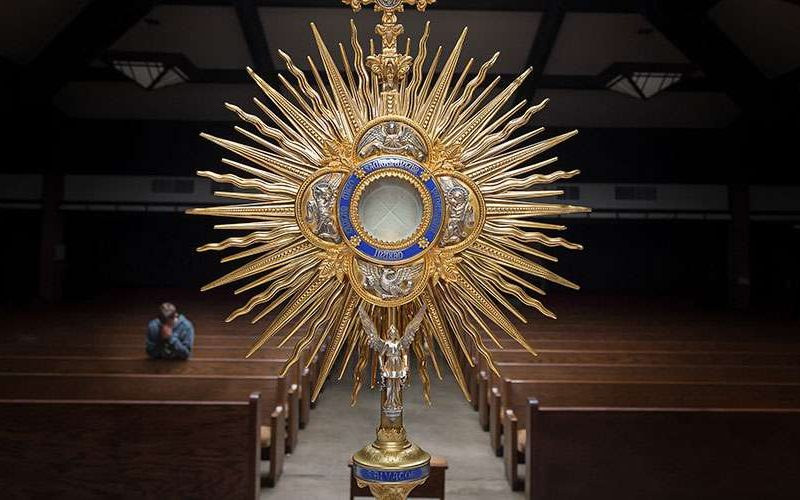

Segundo Encuentro
Para cuando dudes de ti.
«Todo lo puedo en Aquel que me conforta.»
— San Pablo, Filipenses 4, 13
Hola, Sophi. Si estás leyendo esto, probablemente estás dudando de ti.
Y cuando alguien duda de sí mismo, las palabras deben escogerse con mucho cuidado. Una frase puede herir muchísimo, pero también puede convertirse en una pequeña luz al final del túnel.
A diferencia de otros encuentros, aquí no encontrarás un audio, un video ni una voz que te acompañe. Solo habrá letras. Quise que fuera así porque hay verdades que necesitan silencio para poder escucharse.
Antes de continuar, quiero pedirte una cosa.
Imagina que acabas de entrar a una capilla completamente vacía. No hay nadie más. Solo tú.

Frente a ti está el Santísimo Sacramento expuesto. No estás hablando conmigo. No estás intentando convencerte de nada. Estás frente a Aquel que conoce cada pensamiento que ha pasado por tu corazón desde antes de que tú misma lo conocieras.
Y allí, delante de Él, llevas todas esas dudas que hoy tienes sobre ti.
Respira.
Porque creo que este encuentro comienza precisamente ahí.
¿Por qué a veces dudamos de nosotros mismos?
Generalmente porque, delante de nosotros, aparece algo que parece más grande que nuestras fuerzas.
Una enfermedad.
Una pérdida.
Una nueva responsabilidad.
Una nueva etapa.
Un fracaso.
Una decisión importante y difícil.
O simplemente el peso de compararnos con otras personas.
Entonces comenzamos a pensar:
«Quizá no soy suficiente.»
«Quizá no podré.»
«Quizá todos estaban equivocados sobre mí.»
Y, curiosamente, hay algo de verdad en esa sensación. Porque tú y yo somos verdaderamente limitados. Nos cansamos. Nos equivocamos. Tenemos miedo.
La fe cristiana nunca ha enseñado que el ser humano sea autosuficiente. Nunca. Lo que sí enseña es algo infinitamente más esperanzador: que nunca hemos sido llamados a caminar solos.
El problema no es reconocer nuestra debilidad. De hecho, eso es muy prudente. El problema aparece cuando olvidamos que Dios acostumbra manifestar su fuerza precisamente en quienes reconocen que lo necesitan.
Por eso, antes de seguir dudando de ti, quisiera invitarte a mirar hacia atrás. Y no, no para admirarte a ti misma. Sino para contemplar la fidelidad de Dios en tu historia.
Quizá el miedo ha intentado borrar estos recuerdos...
Cuando perdiste al hombre que había llegado a ser como un padre para ti, seguiste de pie. Lloraste, sufriste y continuaste caminando. Que el Señor lo tenga en su gloria.
Cuando llegaste siendo adolescente a un país completamente nuevo, lejos de muchas cosas conocidas y quizá sin haberlo elegido como tú habrías querido, no dejaste que el miedo tuviera la última palabra. Seguiste avanzando.
Cuando reconociste con humildad que tu formación necesitaba fortalecerse, no buscaste excusas. Decidiste aprender.
Cuando viste que necesitabas dinero, trabajaste con honestidad en lo que fuera necesario, recordando que ningún trabajo digno disminuye el valor de una persona.
Cuando levantaste con esperanza un negocio que terminó dando frutos incluso fuera de la capital, descubriste que Dios puede bendecir el esfuerzo humilde.
Cuando asumiste una deuda para ayudar a cubrir los gastos del accidente de tu madre, elegiste la caridad por encima del resentimiento. Pudiste haber respondido con amargura por heridas del pasado, pero elegiste amar.
Cuando terminaste todos los cursos de tu malla curricular en CERTUS, lo hiciste con perseverancia, paso a paso, sin rendirte cuando el camino parecía largo.
Cuando esperabas la respuesta de Euromotors y no sabías cuál sería el desenlace, aprendiste a tener paciencia.
Cuando despediste a Daniel, tu gran amigo y socio, atravesaste un dolor que pocas personas pueden comprender. Y aun así seguiste adelante. Que Dios le conceda el descanso eterno.
Cuando visitas a tu padre incluso en los días en que sería más cómodo quedarte en casa, cuando escuchas con paciencia sus historias y procuras acompañarlo con amor, estás viviendo un mandamiento que agrada profundamente a Dios.
Cuando piensas en tu abuelita y le compras aquello que sabes que la hará feliz, reflejas algo del amor generoso con el que Dios cuida de nosotros. 🌻
¿Notas algún patrón?
En ninguno de esos momentos sabías cómo terminaría la historia. No caminabas porque vieras claramente el final. Simplemente seguías avanzando. Y cada vez que dabas ese paso, Dios ya estaba esperándote allí.
Quizá hoy vuelves a sentir que no puedes.
Pero tampoco podías cuando llegaste a un país nuevo.
Tampoco podías cuando empezaste desde abajo.
Tampoco podías cuando despediste a Daniel.
Tampoco podías cuando llorabas la pérdida de quien había sido como un padre para ti.
Y, sin embargo, aquí estás.
No porque nunca hayas sido débil.
Sino porque Dios nunca ha dejado de sostenerte.
La verdad que quisiera que nunca olvidaras.
No quiero convencerte de que puedes hacerlo todo por tus propias fuerzas. Ninguno de nosotros es autosuficiente. Pero sí quiero recordarte que Dios puede darte la gracia necesaria para aquello a lo que te llama.
Tu valor nunca ha dependido de tu rendimiento.
Nunca ha dependido de tu salario.
Nunca ha dependido de tus estudios.
Nunca ha dependido de si otros reconocen lo que haces.
Tu dignidad no comenzó con tus logros ni depende de ellos. Dios te creó a su imagen y, por eso, posees una dignidad que nadie puede quitarte. Y fue confirmada el día en que Cristo entregó su vida por ti.
No necesitas demostrar que vales. Ya tienes un valor que nadie puede aumentar ni disminuir.
Cuando dudes de ti, no mires primero tus fuerzas. Mira la fidelidad de Dios. Porque Él nunca ha dejado de escribir tu historia, incluso en los capítulos donde tú solo alcanzabas a ver oscuridad.
«Te basta mi gracia, porque mi poder se manifiesta plenamente en la debilidad.»
— 2 Corintios 12, 9 (Biblia de Jerusalén)
Oración
«No le cuentes a Dios cuán grandes son tus problemas.
Cuéntale a tus problemas cuán grande es Dios.»
En el nombre del Padre, del Hijo y del Espíritu Santo:
Señor, ayúdame a recordar siempre que mi vida está en tus manos y que nada escapa a tu providencia. Cuando no comprenda lo que estoy viviendo, concédeme la gracia de confiar en que nunca me abandonas y de creer que puedes sacar un bien incluso de aquello que hoy me duele.
No permitas que la incertidumbre nuble mi confianza en Ti, ni que mis dudas sean más fuertes que tu fidelidad. Haz que, cuando vuelva a dudar de mí, recuerde que nunca me has pedido caminar sola, sino caminar contigo.
Amén.
Ahora habla con Dios
Vuelve a esa capilla que imaginaste al principio. Cuéntale lo que sientes. Él ya lo sabe todo, pero quiere escucharlo de ti.